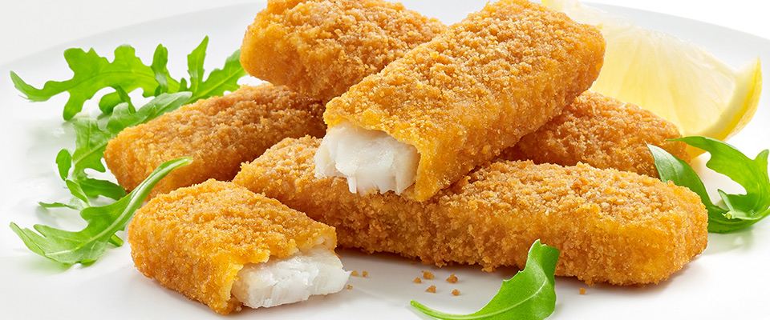

Jumbo fish fingers
GOLDEN CRISPY BREADCRUMBS

Makes 10 portions Cooks In 25 minutes prep, plus cooking Difficulty Not too
tricky
INGREDIENTS
- 1 x 2 kg side of salmon, skin off, pin-boned, from sustainable sources
- 2 large free-range eggs
- 2 tsp sweet smoked paprika
- 250 g wholemeal bread
- 30 g Cheddar cheese
- extra virgin olive oil
METHOD
- Cut the fish into 10 x 120g portions. I tend to cut the side lengthways about 3cm
thick,
then
into chunks from that.
- In a shallow bowl:
- whisk the eggs with the paprika and a pinch of sea salt and black
pepper.
- Tear the bread into a food processor, grate in the cheese, add 2
tbsp of oil
and whiz until
you have breadcrumbs, then tip into a tray
- Coat each fish portion in the egg mixture, let any excess drip off,
then
turn in the
breadcrumbs until well coated all over
- Transfer to a tray lined with greaseproof paper, layering them up
between
sheets of paper
until they’re all coated.
- Cook right away or freeze in the tray – once frozen, you can pop
them into a
tub or
sandwich bags for easier storage.
- To cook:
- Place however many jumbo fish fingers you need on a roasting tray
- Cook in a preheated oven at 200°C/400°F/gas 6 for 15 minutes from
fresh, or
20 minutes
from frozen, or until golden and cooked through.
Sign-up to receive new recipes:
User Comments
All comments:
This is a very fun recipe to follow.
- Ahmed Z.
This is my favorite recipe. I enjoy it.
- Karim K.